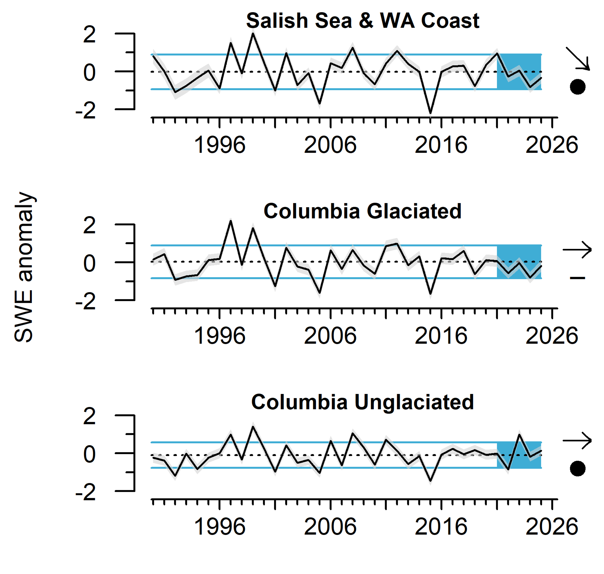

In all three of the northern ecoregions, late winter storms in 2025 boosted April 1 snowpack to average levels, which generally exceeded levels seen in 2024. However, an early springtime snowmeltand a dry summer led to moderate to severe drought conditions in the Pacific Northwest by early fall of 2025. Average snowpack in the Columbia Glaciated ecoregion over the last five years was below the longterm mean, while April 1 snowpack in the Salish Sea & WA Coast ecoregion showed a declining 5-year trend.

Anomalies of April 1st snow-water equivalent (SWE) in three of the northern freshwater ecoregions of the CCE, 1990-2025. Error envelopes represent 95% credible intervals. Snow-water equivalent data were derived from the Natural Resources Conservation Service’s SNOTEL sites in WA, OR, and ID. Data compilation and summary calculations by S. Munsch, NMFS/NWFSC. Freshwater ecoregions based on Abell et al. (2008).